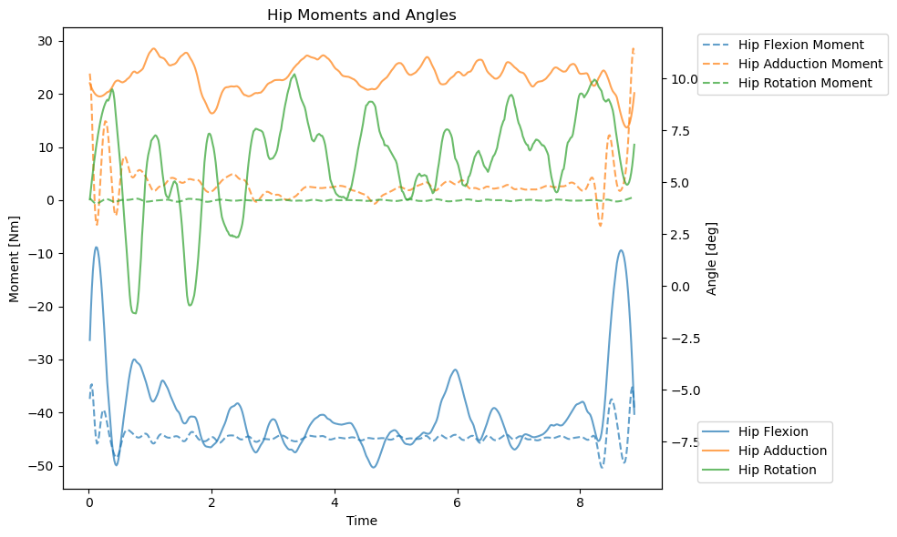

Motion tracking IV: Modeling inverse kinematics and dynamics
Overview
In this script, we will use the OpenSim (Seth et al. 2018) to model the inverse kinematics (i.e., joint angles) and dynamics (i.e., joint forces) of the motion tracking data.
The documentation of OpenSim project is available here
Code to prepare the environment
import opensimimport osimport globimport shutilimport pandas as pdfrom scipy.signal import savgol_filterimport xml.etree.ElementTree as ETimport numpy as npimport matplotlib.pyplot as pltcurfolder = os.getcwd()# This is where we store the dataprojectdata = os.path.join(curfolder, 'projectdata')# These are the sessions we want to tracksessionstotrack = glob.glob(os.path.join(projectdata, 'Session*'))print(sessionstotrack)# Here we store the metadata about weight, heightMETA = pd.read_csv(curfolder +'\\..\\00_RAWDATA\META_mass.txt', sep='\t')# Here are the config files for the OpenSim pipelinescalefile = curfolder +'/Pose2Sim/OpenSim_Setup/Scaling_Setup_Pose2Sim_Body135_FLESH.xml'ikfile = curfolder +'/Pose2Sim/OpenSim_Setup/IK_Setup_Pose2Sim_Body135_FLESH.xml'idfile = curfolder +'/Pose2Sim/OpenSim_Setup/ID_Setup_Pose2Sim_Body135_FLESH.xml'# Get sessionIDssessionIDs = []for session in sessionstotrack: sessionIDs.append(session.split('\\')[-1]) sessionIDs[-1] = sessionIDs[-1].split('_')[1]# Keep only unique values sessionIDs =list(set(sessionIDs))print(sessionIDs)
Custom functions
# Function to update XML filedef update_xml_file(dir, input_file, output_file, new_mass=None, new_model_file=None, new_marker_file=None, new_timerange=None, new_output_model_file=None, new_coord_file=None):# Load the XML document tree = ET.parse(input_file) root = tree.getroot()# If the file has Scaling in the name, we need to update the marker fileif'Scaling'in input_file:# Update the <mass> element if a new value is providedif new_mass isnotNone: mass_element = root.find('.//mass')if mass_element isnotNone: mass_element.text = new_mass# Update the <model_file> element within <GenericModelMaker> if a new value is providedif new_model_file isnotNone: model_file_element = root.find('.//GenericModelMaker/model_file')if model_file_element isnotNone: model_file_element.text = new_model_file# Update the <marker_file> element within <ModelScaler> and <MarkerPlacer> if a new value is providedif new_marker_file isnotNone: marker_file_elements = root.findall('.//marker_file')for marker_file_element in marker_file_elements: marker_file_element.text = new_marker_file# Update all time rangesif new_timerange isnotNone: timerange_elements = root.findall('.//time_range')for timerange_element in timerange_elements: timerange_element.text = new_timerange# Update the <output_model_file> element within <MarkerPlacer> if a new value is providedif new_output_model_file isnotNone: output_model_file_element = root.find('.//MarkerPlacer/output_model_file')if output_model_file_element isnotNone: output_model_file_element.text = new_output_model_file# Update the <output_model_file> element within <ModelScaler> if a new value is providedif new_output_model_file isnotNone: output_model_file_element = root.find('.//ModelScaler/output_model_file')if output_model_file_element isnotNone: output_model_file_element.text = new_output_model_fileelif'IK'in input_file:# We update model_fileif new_model_file isnotNone: model_file_element = root.find('.//model_file')if model_file_element isnotNone: model_file_element.text = new_model_file# We need to update time rangeif new_timerange isnotNone: timerange_elements = root.findall('.//time_range')for timerange_element in timerange_elements: timerange_element.text = new_timerange# And we need to update the path to trc fileif new_marker_file isnotNone: marker_file_element = root.find('.//marker_file')if marker_file_element isnotNone: marker_file_element.text = new_marker_file# And output_motion_fileif new_output_model_file isnotNone: output_model_file_element = root.find('.//output_motion_file')if output_model_file_element isnotNone: output_model_file_element.text = new_output_model_fileelif'ID'in input_file:# We update model_fileif new_model_file isnotNone: model_file_element = root.find('.//model_file')if model_file_element isnotNone: model_file_element.text = new_model_file# We need to update time rangeif new_timerange isnotNone: timerange_elements = root.findall('.//time_range')for timerange_element in timerange_elements: timerange_element.text = new_timerange# And we need to update the path to mot fileif new_coord_file isnotNone: coord_file_element = root.find('.//coordinates_file')if coord_file_element isnotNone: coord_file_element.text = new_coord_file# And output_motion_fileif new_output_model_file isnotNone: output_model_file_element = root.find('.//output_gen_force_file')if output_model_file_element isnotNone: output_model_file_element.text = new_output_model_fileif'Scaling'in input_file: output_file_path = os.path.join(dir, output_file) # Scaling is saved in the participant folder tree.write(output_file_path, encoding='UTF-8', xml_declaration=True)else: tree.write(output_file, encoding='UTF-8', xml_declaration=True)# Function to extract time range from a trialdef extract_first_and_last_time(file_path): df = pd.read_csv(file_path, sep='\t', skiprows=4)# Extract the first and last time values, time is the second column first_time = df.iloc[0, 1] last_time = df.iloc[-1, 1]return first_time, last_time# Function to smooth .mot filedef smooth_data(input_path, output_path, smoothing_params, plot=False, plot_column=None):# Read the entire filewithopen(input_path, 'r') asfile: lines =file.readlines()# Identify header and data section header_lines = [] data_start_index =0for i, line inenumerate(lines):if line.strip() =='endheader': header_lines = lines[:i +1] data_start_index = i +1break# Extract the column headers and numerical data column_headers = lines[data_start_index].split() data_lines = lines[data_start_index +1:] data = np.array([list(map(float, line.split())) for line in data_lines])# Identify the column index for plotting (if applicable) plot_column_idx = column_headers.index(plot_column) if plot_column elseNone# Apply smoothing to each column except 'time' smoothed_data = data.copy()for col_idx inrange(1, data.shape[1]): # Skip 'time' (assumed to be the first column) smoothed_data[:, col_idx] = savgol_filter( data[:, col_idx], window_length=smoothing_params['window_length'], polyorder=smoothing_params['polyorder'] )if plot ==True:#Plot unsmoothed vs smoothed data for the specified columnif plot_column and plot_column_idx isnotNone: plt.figure(figsize=(10, 6)) plt.plot(data[:, 0], data[:, plot_column_idx], label='Unsmoothed', alpha=0.7) plt.plot(data[:, 0], smoothed_data[:, plot_column_idx], label='Smoothed', alpha=0.7) plt.xlabel('Time') plt.ylabel(plot_column) plt.title(f'Unsmoothed vs Smoothed: {plot_column}') plt.legend() plt.grid(True) plt.show()# Write back the original structure with smoothed datawithopen(output_path, 'w') as output_file:# Write the header output_file.writelines(header_lines)# Write the column headers output_file.write('\t'.join(column_headers) +'\n')# Write the smoothed data row by row - this is necessary to maintain the same formatting, otherwise inverse dynamics will failfor row in smoothed_data: output_file.write('\t'.join(f'{x:.6f}'for x in row) +'\n')
Inverse kinematics and dynamics with OpenSim
The opensim pipeline has three steps - scaling - inverse kinematics - inverse dynamics
In scaling, we scale the model to match the anthropometry of the subject. We use the Pose2sim model with 135 keypoints (BODY_135) and use a pre-recorded t-pose video to scale this model and create new model, scaled for each participant.
In inverse kinematics, we use the scaled model to estimate the joint angles of the participant. We use the motion tracking data to estimate the joint angles. Joint angles are saved as .mot files in /ResultsInverseKinematics folder per each trial.
In inverse dynamics, we use the joint angles to estimate the joint forces. Joint forces are saved as .sto files in /ResultsInverseDynamics folder per each trial.
# Note that session contains of two parts that have the same participants (it's always sessionID_1 and sessionID_2)for sessionID in sessionIDs:# Get the session path of the first session session1path = os.path.join(projectdata, 'Session_'+ sessionID +'_1') session2path = os.path.join(projectdata, 'Session_'+ sessionID +'_2')# Get p0 folders from both sessions p0session1 = os.path.join(session1path, 'P0') p0session2 = os.path.join(session2path, 'P0')# Get p1 folders from both sessions p1session1 = os.path.join(session1path, 'P1') p1session2 = os.path.join(session2path, 'P1')# Merge them participants = [p0session1, p0session2, p1session1, p1session2] #p0session1,p0session2print(participants)for p in participants: os.chdir(p)###### SCALING ####### We do scaling only for Session x_1 (and copy it to x_2)if'Session_'+ sessionID +'_1'in p:print(p)# Get weight from META for this pcn pcn = p.split('\\')[-1].lower() weight = META.loc[META['pcn'] == pcn, 'weight'].values[0] new_mass =str(weight)# Get the path to the input model new_model_file ='opensim\Model_Pose2Sim_Body135.osim' new_model_file = os.path.join(p, new_model_file)# Get the path to the marker file tposefolder = glob.glob(os.path.join(p, '*tpose*'))[0] trcfolder = os.path.join(tposefolder, 'pose-3d') trcfiles = glob.glob(os.path.join(trcfolder, '*.trc'))# Keep only the one with 'butterworth' in its name (this is filtered file) new_marker_file = [trc for trc in trcfiles if'butterworth'in trc][0]# Get the time range of this file first_time, last_time = extract_first_and_last_time(new_marker_file) new_timerange =str(first_time) +' '+str(last_time)# New output model file participant = p.split('\\')[-1] new_output_model_file ='opensim\Model_Pose2Sim_scaled_'+ sessionID +'_'+ participant +'.osim'# Update the XML file with new values new_scalefile ='Scaling_Setup_Pose2Sim_Body135_FLESH_'+ sessionID +'_'+ participant +'.xml' update_xml_file(p, scalefile, new_scalefile, new_mass=new_mass, new_model_file=new_model_file, new_marker_file=new_marker_file, new_timerange=new_timerange, new_output_model_file=new_output_model_file)print('Scaling...') opensim.ScaleTool(new_scalefile).run()# Copy scaling setup also to session 2 of the same participant session2Path = os.path.join(projectdata, 'Session_'+ sessionID +'_2', participant) os.makedirs(session2Path, exist_ok=True) shutil.copy(new_scalefile, session2Path)# And scaled model too session2ScaledModelPath = os.path.join(session2Path, 'opensim') os.makedirs(session2ScaledModelPath, exist_ok=True) shutil.copy(new_output_model_file, session2ScaledModelPath)# If its session x_2, we directly go to IK and IDelse:print('Session x_2, skipping scaling...')###### INVERSE KINEMATICS ####### Create folder ResultsInverseKinematicsifnot os.path.exists(os.path.join(p, 'ResultsInverseKinematics')): os.makedirs(os.path.join(p, 'ResultsInverseKinematics'))# Collect all folders in p folders = glob.glob(os.path.join(p, '*'))# Get rid of all folders/files that we don't want now folders = [f for f in folders if'opensim'notin f] folders = [f for f in folders if'toml'notin f] folders = [f for f in folders if'txt'notin f] folders = [f for f in folders if'xml'notin f] folders = [f for f in folders if'sto'notin f] folders = [f for f in folders if'tpose'notin f] folders = [f for f in folders if'ResultsInverseKinematics'notin f] folders = [f for f in folders if'ResultsInverseDynamics'notin f]#print(folders)for f in folders:print(f) trialid = f.split('\\')[-1]# Get trc file trcfiles = glob.glob(os.path.join(f, '*/*.trc'), recursive=True) new_trc_file = [trc for trc in trcfiles if'butterworth'in trc][0]# Get the time range from it first_time, last_time = extract_first_and_last_time(new_trc_file) new_timerange =str(first_time) +' '+str(last_time)# Get the scaled model scaled_model = new_output_model_file# Output motion file output_motion_file ='ResultsInverseKinematics/'+ sessionID +'_'+ trialid +'.mot' output_motion_file = os.path.join(p, output_motion_file)# Update the XML file new_ikfile_name ='IK_Setup_Pose2Sim_Body135_FLESH_'+ sessionID +'_'+ trialid +'.xml' new_ikfile = os.path.join(p, new_ikfile_name) update_xml_file(p, ikfile, new_ikfile, new_model_file=scaled_model, new_marker_file=new_trc_file, new_timerange=new_timerange, new_output_model_file=output_motion_file)print('Inverse Kinematics...')try: opensim.InverseKinematicsTool(new_ikfile).run()except:print('Error in IK')continue# opensim doesn't smooth the data, but we need to smooth them before inverse dynamics, otherwise we will magnify the noise smoothing_params = {'window_length': 35, 'polyorder': 3} smooth_data(output_motion_file, output_motion_file, smoothing_params, plot=True, plot_column='arm_flex_r')###### INVERSE DYNAMICS ####### Create folder ResultsInverseKinematicsifnot os.path.exists(os.path.join(p, 'ResultsInverseDynamics')): os.makedirs(os.path.join(p, 'ResultsInverseDynamics'))# Time range is the same as in IK# Scaled model is the same# mot file is the new_ikfile# Output force file output_gen_force_file ='ResultsInverseDynamics/'+ sessionID +'_'+ trialid +'_ID.sto' output_gen_force_file = os.path.join(p, output_gen_force_file)# Update the XML file new_idfile_name ='ID_Setup_Pose2Sim_Body135_FLESH_'+ sessionID +'_'+ trialid +'.xml' new_idfile = os.path.join(p, new_idfile_name) update_xml_file(p, idfile, new_idfile, new_model_file=scaled_model, new_timerange=new_timerange, new_coord_file=output_motion_file, new_output_model_file=output_gen_force_file)print('Inverse Dynamics...')try: opensim.InverseDynamicsTool(new_idfile).run()except:print('Error in ID')continue
Here is an example of angle (full line) and moment/torque (dashed) data for right hip. They are further processed in motion processing script.

References
Seth, Ajay, Jennifer L. Hicks, Thomas K. Uchida, Ayman Habib, Christopher L. Dembia, James J. Dunne, Carmichael F. Ong, et al. 2018. OpenSim: Simulating Musculoskeletal Dynamics and Neuromuscular Control to Study Human and Animal Movement.PLOS Computational Biology 14 (7): e1006223. https://doi.org/10.1371/journal.pcbi.1006223.